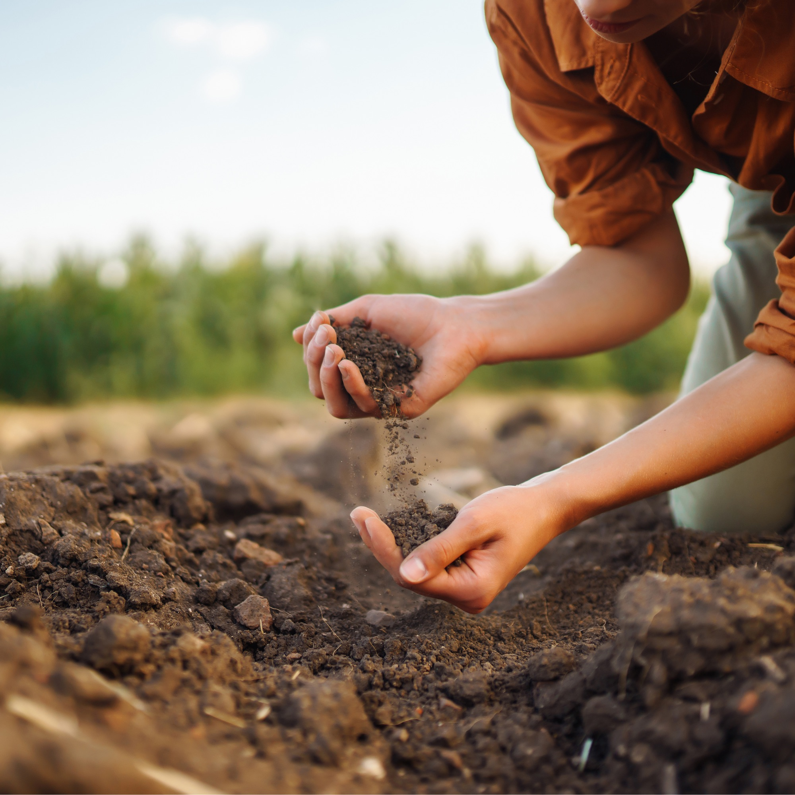

Field notes · 2026
Three plots. One season. One of them went the wrong way.
46%more organic matter where the biologically complete compost went in.
Sandra NiggemeyerVan, Texas
Source: her field trial report, 2026.